New CryptoScope Features
September 30, 2011
Table of contents:
Quadrant tool:
Click this symbol:
Mouse over the cipher block to select quadrants:
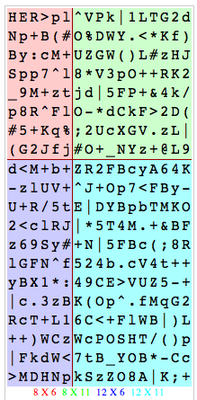
Quadrant dimensions are displayed at the bottom. When done selecting your quadrants, click the left mouse button, and the cipher block will be re-written as if each quadrant was read as a separate block. The above example becomes:
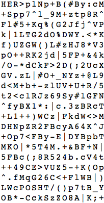
Homophone candidate score map:
Now when you run one of the brute force sequence homophone searches, two new links appear at the top:
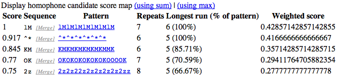
Clicking them will turn the cipher block into a density map showing concentrations of symbols that scored highly during the brute force search. This may help you visualize where strong homophone sequences are occurring in the cipher text. Example for "using sum":
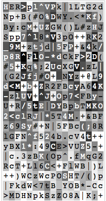
The homophone score is computed at each position of the cipher text by adding the candidate score for any candidates that cover the position. In the above example, notice how dark the M's are at the beginning. This is because two different candidates, "lM" and "KM", are contributing to the scores at those positions. The M's towards the end are a bit lighter, because their scores are not as high.
Notice how the "+" symbols have white or very light squares. They are not involved in any high-scoring candidate homophone sequences.
Here is the density map for "using max":
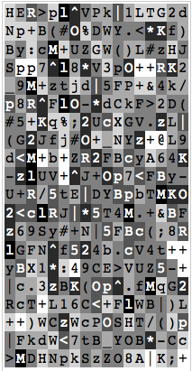
In this map, only the maximum candidate score is considered for each position of cipher text.
Repeated sequences (any direction):
Now it shows you a breakdown and tally of sequences in each direction. Example for the 340 cipher:
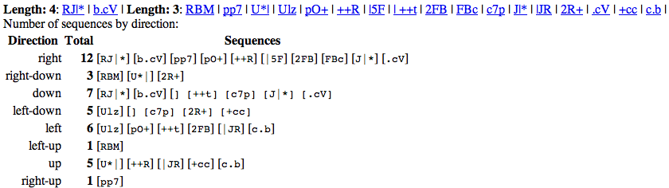
Highlight first occurrences of symbols:
Clicking this link will show where in the cipher text the each symbol first occurs. Example for the 340:
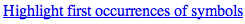
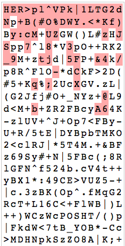
(I stole this idea from Smithy)
Charts for "Max non-repeating sequence lengths by position"
In the section "Largest non-repeating sequences", the "Show All" link has been changed to "Show All and Chart":
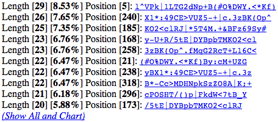
Click the link to reveal all non-repeating sequences, and a chart that tracks the largest non-repeating sequence length that covers each position of the cipher text. Example for the 340:
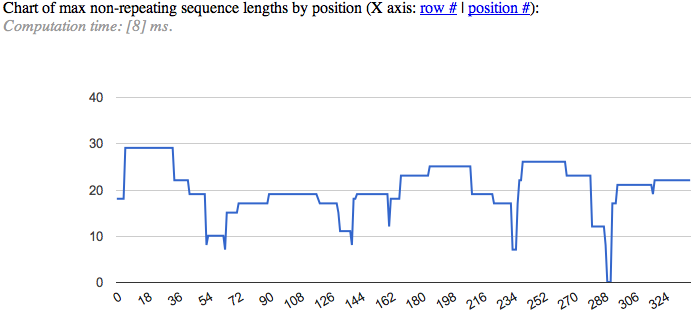
The chart gives you an idea of where the cipher text has few repetitions, and where there are many. Hover over the plot to show the maximum. Click the "row #" link to convert the X-axis labels to row numbers. Click "position #" link to convert the X-axis labels to position numbers.
Reps chart:
After the N-grams section, the Reps Chart is displayed. Example for the 340:
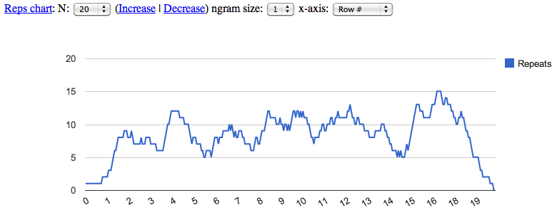
In this example, the chart is looking at each position of the cipher text, and counting the number of repeated symbols that occur within 20 positions from the current position. This is a way to give you an idea of where the cipher text repeats symbols a lot. You can change the sensitivity of the chart by adjusting N using the pulldown list, or using the Increase and Decrease links. By default the chart only looks at individual symbols (1-grams). But you can change the ngram size using the pulldown list. For example, here is the reps chart for the 340 using ngram size 2 and N=60:
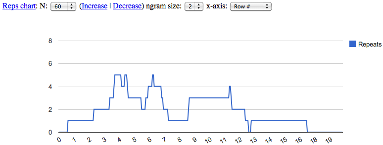
This chart shows the high number of repeated 2-grams that occur near rows 3 through 7.
You can toggle the X-axis labels between Row # and Position # using the x-axis dropdown list.
Yield analysis:
Yield analysis is the search for cipher text sections that, when decoded, will yield the maximum percentage of overall cipher text. After clicking the Yield button for the 340 cipher, for example, you'll see this:
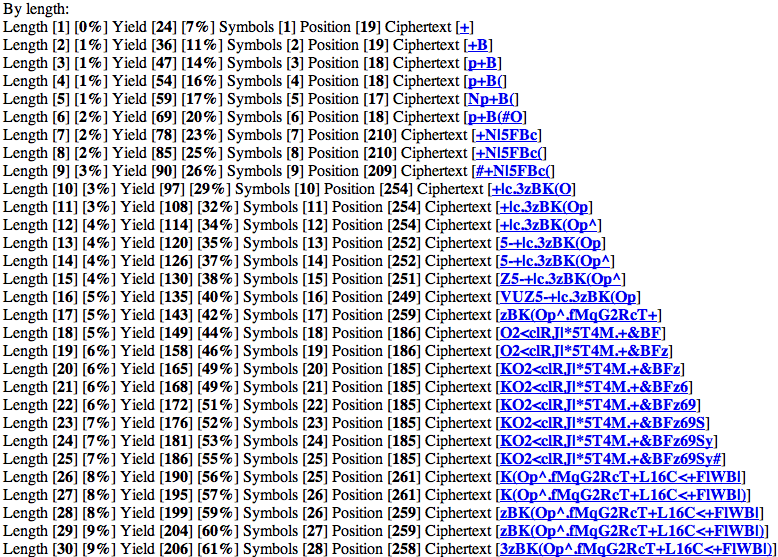
Each entry is the answer to this question: Which cipher text section of length L will, when decoded, yield the largest percentage of overall cipher text? For instance, the cipher text segment "3zBK(Op^.fMqG2RcT+L16C<+FlWB|)" at position 258 of the 340 cipher contains symbols that, when decoded, will reveal 206 positions, or 61%, of the overall cipher text.
This is possibly useful for decryption attacks. For example, in the 340 cipher, you can locate a section of cipher text that is only 74 symbols long, but will reveal 90% of the entire cipher text when decoded:
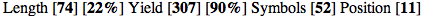
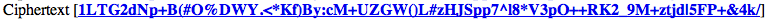
Here is an explanation of the numbers:
- 74: The length of the cipher text section
- 22%: The proportion of this cipher text section to the overall cipher text length
- 307: The total number of positions of overall cipher text that will be decrypted if the 74 symbol section is decrypted.
- 90%: The proportion of overall cipher text that will be decrypted if the 74 symbol section is decrypted.
- 52: The number of distinct symbols within the 74 symbol section.
- 11: The position # where the 74 symbol section begins
Click the cipher text section links to highlight them in the cipher text.
The yield percentage has also been added to the results generated by "Ciphertext segments with the most repeated symbols":
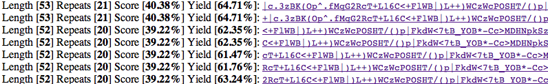
Hide frequent or rare symbols:
You can hide symbols that occur less than a specified number of times in the cipher text:
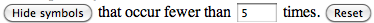
Result for the 340:
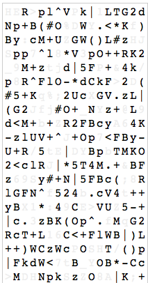
You can also hide symbols that occur more than a specified number of times in the cipher text:
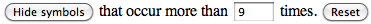
Result for the 340:
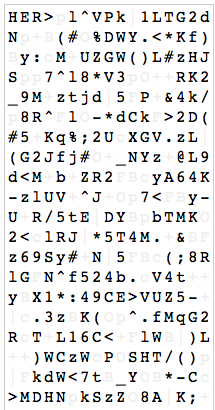
Click the "Reset" button to return the cipher block to normal.
Intersections of repeating symbols:
This tool will search the cipher text for any groupings of symbols that repeat, and intersect. Sample results for the 340:
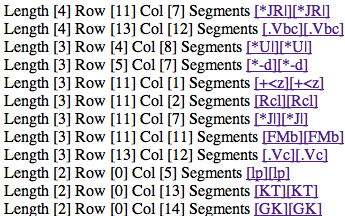
The segments can be oriented horizontally, vertically, or diagonally. Matches can wrap over cipher text block boundaries. Click the segment links to highlight the found segments in the cipher text.
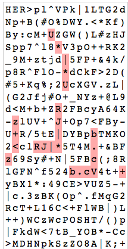
The symbols in each segment are not required to be in exactly the same order. Here's an example showing an intersection of [-d*] and [-*d]:
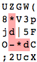
Environment analysis:
Jurgen Koller told me of a technique he uses called "environment analysis", where he looks at repeating symbols, and determines which other symbols repeat nearby. These kinds of repetitions reveal internal structure of the cipher text, and may suggest whether some symbols represent more than one plaintext symbol. I reproduced his analysis technique in CryptoScope.
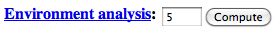
Click the "Compute" button to perform environment analysis of distance 5. Here is an excerpt of the results for the 408 cipher:
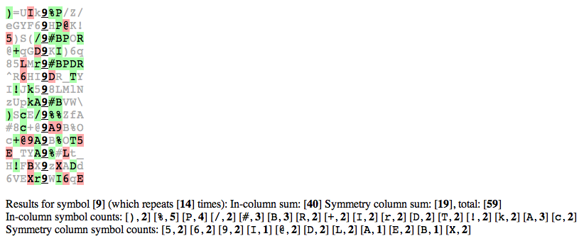
The grid shows excerpts of the cipher text at each occurrence of the 9 symbol. Five symbols to the right and to the left are shown. Symbols highlighted in green are symbols that are found to repeat within the same columns. Symbols highlighted in red are found to repeat within mirrored columns.
The repetition results are tabulated below each grid. "In-column sum" reflects the total number of green highlights. "Symmetry column sum" reflects the total number of red highlights. Both totals are summed to produce a grand total (59 in the above example).
You can try other values besides 5 by entering it in the box before clicking "Compute".
Alignment analysis:
Jurgen Koller noticed that some of the symbols of the 340 match the same symbols in the 408, at the exact same positions. Example:
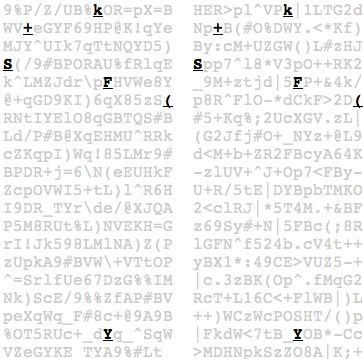
I added an alignment analysis feature to CryptoScope to investigate this phenomenon.
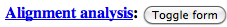
Click "Toggle form" and you'll see:
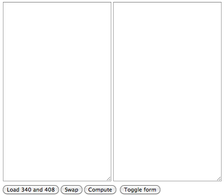
This form will let you compare two cipher texts, to see where the coinciding symbols are located. After you put a cipher in each box and click Compute, the tool will compare the ciphers and look for coinciding symbols. It will also "slide" the 2nd cipher around using all possible offset values, to see if other alignments appear. As an example, let's perform alignment analysis on the 408 and 340 ciphers. Click the "Load 340 and 408" button:
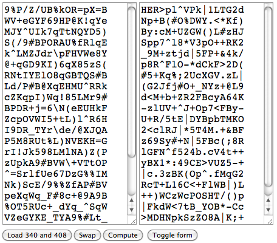
Click "Compute", and you'll see a grid:
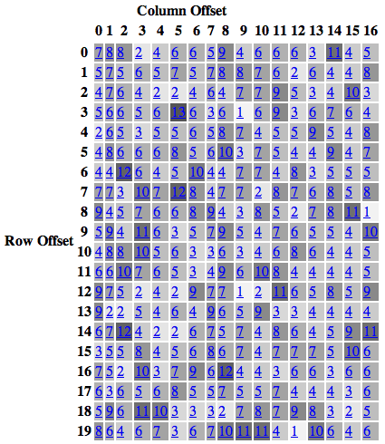
The grid indicates the count of coinciding symbols for each offset combination. For example, when column offset is zero and row offset is zero, then the 408 is compared to the 340 as is. Click the "7" value in the square for column offset 0 and row offset 0, and you'll see the coinciding symbols that Jurgen noticed:
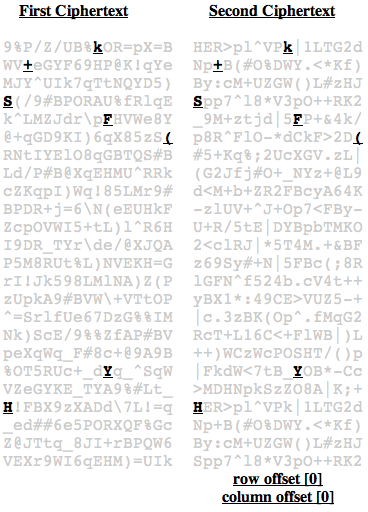
Note that the bottom of the second cipher text is padded with the first few lines of the 340. This is done to make the two cipher text blocks equal in size.
So, those coincidences look interesting, but they aren't unusual, because if we slide the second cipher text around with various offsets, more coincidences appear. Click one of the darker squares to see them (darker squares reflect larger numbers of coincidences). For example, if we click "13" for column offset 5 and row offset 3, these coincidences are shown:
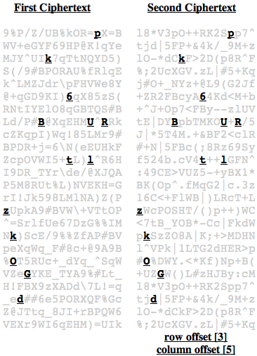
A useful side effect of this analysis is that you can put the same cipher text in both boxes, and the offset alignment analysis will reveal interesting repeated patterns. For example, if you load the 408 into both boxes and click "Compute", you'll see this for column offset 1, row offset 6:
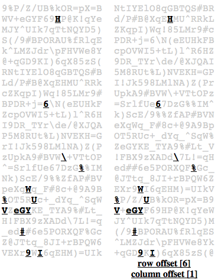
The "V_eGY" pattern is easily visible.
The maximum number of coincidences for the 340 when it is compared to itself is 20:
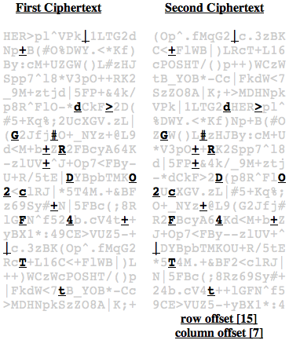
Find repeating ngrams with gaps:
This feature performs a brute force search for various repeating n-gram patterns, with and without gaps. A repeating n-gram without gaps is an unbroken sequence of n symbols that repeats in the cipher text. A repeating n-gram with gaps is a sequence of n symbols, with some fixed number of positions in between the symbols, that repeats in the cipher text.
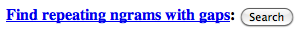
Click "Search" to see the results. Here are a few excerpts of the results for the 340:
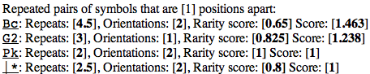
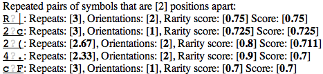
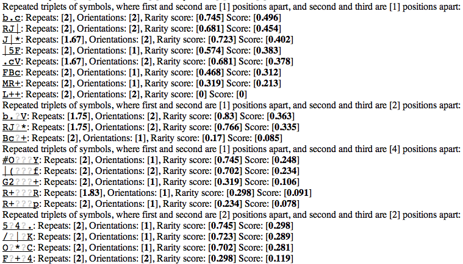
The search looks for repeating n-grams in two orientations by reading the cipher text from left to right, top to bottom. Then it reads the cipher text from top to bottom, left to right.
The "?" symbol represents a gap in the n-gram pattern. It can be matched by any cipher text symbol.
Here is the explanation for the information that appears in the results:
- Repeats: This is computed by counting the coverage of all matched n-gram patterns, divided by the n-gram pattern's length. A round number indicates the n-gram pattern repeated without overlaps. A non-round number indicates the n-gram pattern intersects with one of its repetitions. For example, if the 3-gram "abc" is found to occur twice in the cipher text, and they do not intersect, then the Repeats value is: 6 / 3 = 2. If the 3-gram "abc" is found to occur twice in the cipher text, and they intersect at the symbol "a", then the Repeats value is: 5 / 3 = 1.67.
- Orientations: This is the total number of orientations in which the n-gram pattern was found.
- Rarity score: This is a relative measurement of how often the cipher text symbols in the n-gram pattern repeat in the cipher text. The value from range from 0 to 1, where 0 represents the most common symbols, and 1 represents the rarest symbols. Repetitions of a pattern with a high rarity score are more significant statistically than those with a low rarity score.
- Score: This is computed as: Repeats * Rarity score / Pattern length. The resulting value is an attempt to rank patterns in descending significance.
Click on the n-gram pattern to highlight the repeats in the cipher text. Here is an example after clicking "Bc" and "O?*?C" in the results for the 340:
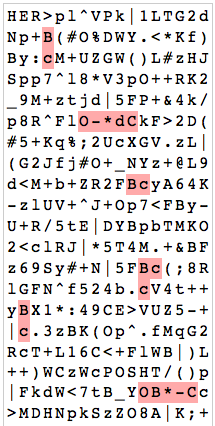
At the end of the n-gram search results, the tool displays the cipher text block with visualizations of the scores. Each block shows a representation of the sum of scores for each position, for a given orientation and n value for the n-gram patterns. Darker squares represent higher scores.
Here is a sample result for the 340, showing repetition scores for all orientations of n-grams for n = 3 and n = 4:
If you hover the mouse pointer over a cipher text symbol, its score sum, and the patterns that contribute to the score sum, are displayed in a tooltip.
Symbol distances grid:
This tool looks at each possible pair of symbols in the cipher text, and looks at the distances between them. Then, it reports the largest distance found for the pair of symbols.
Sample excerpt for the 340:
If you hover the mouse pointer over a cell of the grid, an explanation is displayed.
If the maximum distance is under 10, the cell is shown with a gray background.
The idea behind the grid is to try to find pairs of symbols that repeat a lot, but tend to occur near each other. This suggests that there might be some sort of relationship between the symbols in the pair.
Symmetry analysis:
This feature looks for symmetry in a cipher text block by scanning all possible horizontal and vertical axes and looking for symbols that are reflected about those axes.
There are two ways an axis of symmetry is defined by this tool:
- As an entire row or column of the cipher block
- As the space between two rows or columns of the cipher block
There are two ways the tool looks for symmetrical symbols about an axis:
- Mirror: Treats the axis as a mirror. A matched symbol, that appears on both sides of an axis, will be equidistant from the axis of symmetry.
- Copy: Treats the axis as a boundary. The cipher text on one side of an axis is treated as an exact copy of the cipher text that appears on the other side of the axis.
Sample output for the 340 cipher:
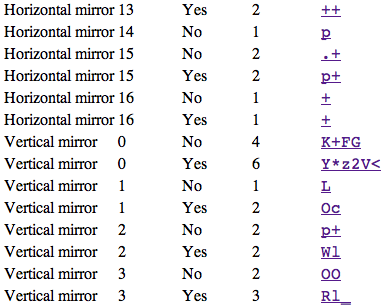
The columns are:
- Type: This can be horizontal mirror, vertical mirror, horizontal copy, or vertical copy.
- Row/Col: This is the row or column at which the axis of symmetry is defined.
- Between?: If "No", the row or column itself is the axis of symmetry. If "Yes", the space between the row or column, and the row or column before it, is the axis of symmetry.
- #Matches: This is the total number of symbols that were found mirrored or copied about the axis of symmetry.
- Symbols: The symbols that were found mirrored or copied about the axis of symmetry. Clicking the symbols will highlight them in the cipher text.
Here is an example of clicking the mirrored symbols
Y*z2V< in the 340 cipher:
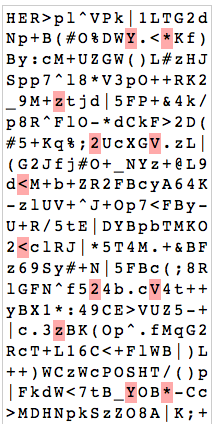
The above example shows symmetrical symbols that are reflected about the horizontal axis defined between the 10th and 11th rows of the cipher text block.
Here is an example of "copy symmetry" in the 408, occurring with the symbols IB_Eq:
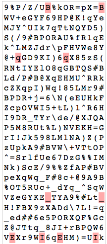
The copy symmetry occurs about the vertical axis defined between the 8th and 9th columns.
N-grams: Highlight all:
A new link appears in the N-grams section:
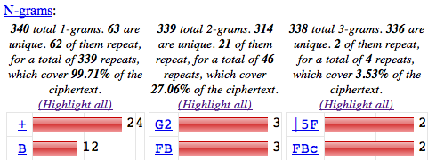
When you click "Highlight all", CryptoScope highlights all occurrences of the n-grams, and uses randomized colors to make it easier to see them all.
Result of highlighting all 1-grams of the 340:
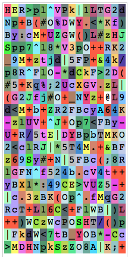
Result of highlighting all 2-grams of the 340:
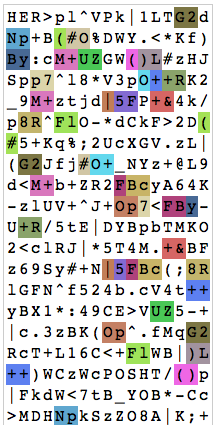
Result of highlighting all 3-grams of the 340:
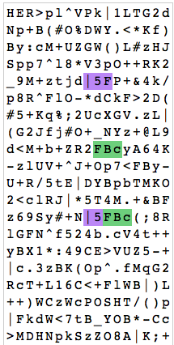
Note that the color assignment is completely random, so there is a chance that the colors assigned to two different n-grams will happen to be the same. If you don't like the color assignments, click the "Highlight all" link again to produce new color assignments.